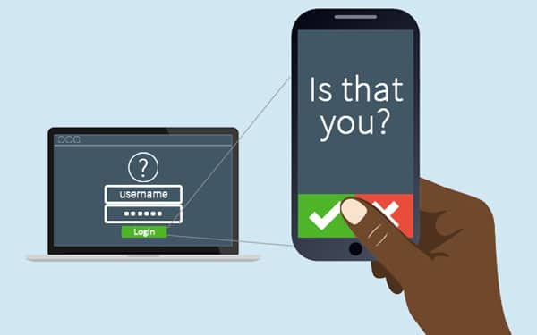
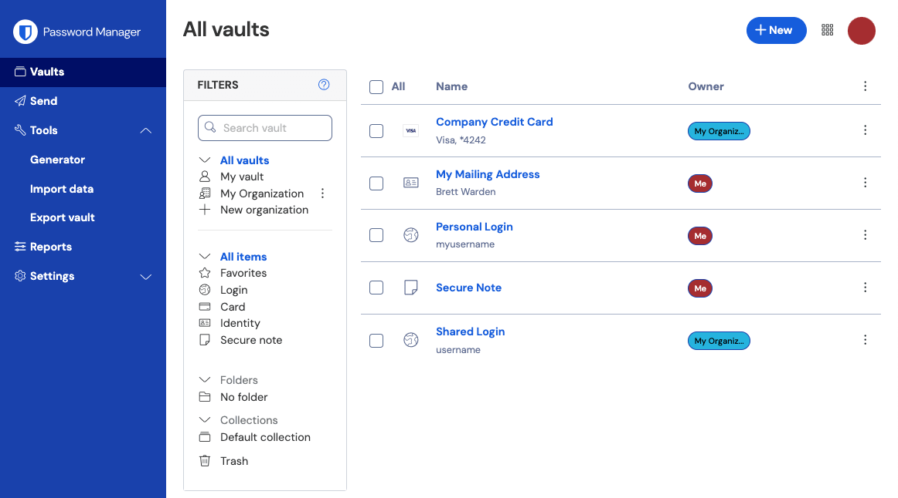

There are many ways for you to stay safe online, including using a strong and seperate password for your emails, Installing the latest software and app updates, using 2fa, using a password manager, Backing your data up, and using 3 random words to create your passwords.

Using a strong and seperate password for your email is important, more so now then ever. If a malicious actor were to gain access to your email account, they can access your private information, send emails pretending to be you, and change all of your other accounts passwords. Using a strong password that is unique will help protect your email in the event that a malicious actor gains access to a less important account, as they will likely try the password that is assosiated with your account. Ideally you should use unique passwords for all of your online accounts.

You should always make sure that your app's and devices have the latest security updates. If you get a prompt to update don't ignore it. Make sure your Phone, tablet, and/or PC is completly updated to keep you safe. Make sure to update your smart devices, like watches, Amazon Alexa's, doorbells, ect. If your phone or device no longer recieves security updates, then it is time to upgrade to a new one, as you are vunerable to attacks. You don't need the latest and greatest devices, one that is a generation or two old will work just fine.

2-Step Verification, also known as 2sv, 2fa, and mfa, is used to protect your important accounts, on top of your password. It often works by sending you a one time pin to your phone number or email after entering your password. This works so long as your email hasn't been comprimised. There are other types of 2fa, including fingerprint or face id, Google or Microsoft authenticator apps, or usb sticks. It is crucial you have these on your important accounts, such your google account and your bank account. This prevents people from accessing your account even if they get their hands on your password.
A password manager helps you store all of your passwords, and generate strong, unique passwords for you to use. You can save your passwords to your browser and that account, so long as your device and browser are up to date. You can save your password to your device, however you need to mae sure your device is up to date, and it is your own personal account on the computer that you sign out of the account and keep your passwords locked behind your account's password. You can also use a password manager, which are usually paid or free apps that have the ability to save and generate unique passwords for you.
